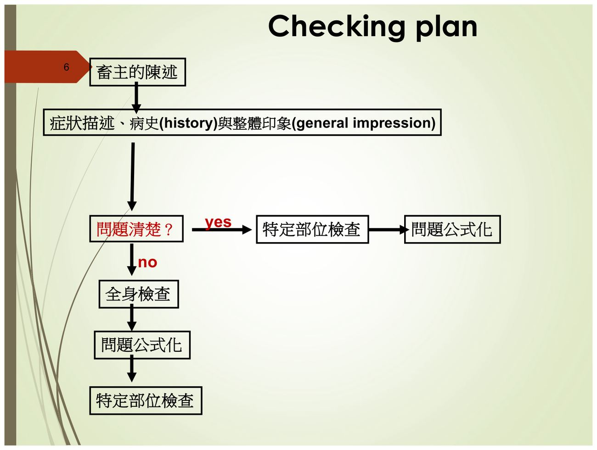
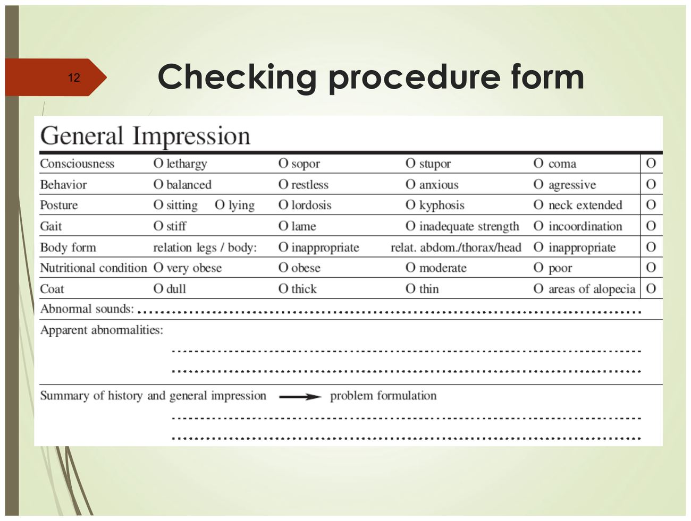
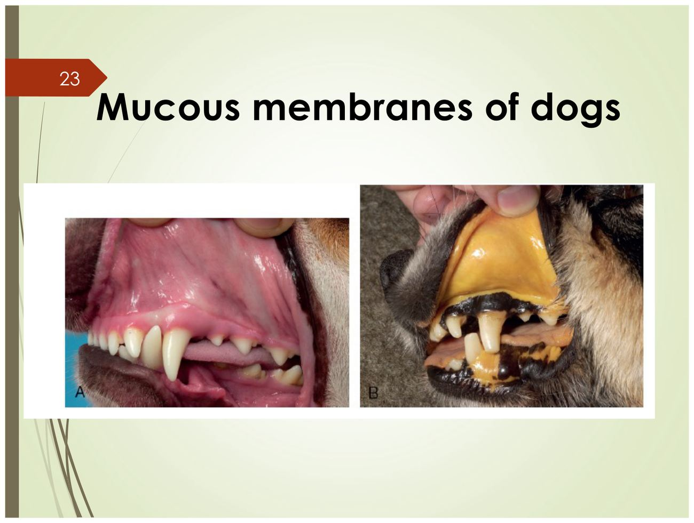
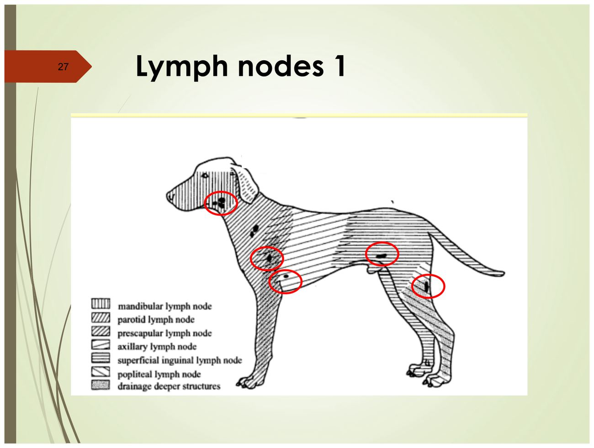
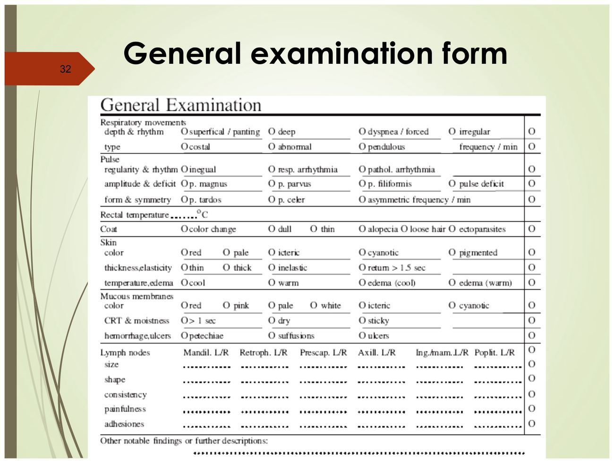

大方向與重點摘要
- 這章在講什麼
- 犬貓理學檢查（physical examination）的固定流程與每一步要看什麼：基本資料（signalment）→ 病史（history）→ 整體印象（general impression）→ 生命徵象（vital signs）→ 系統檢查（systems approach）。投影片偏重整體印象、TPR、皮膚、黏膜、淋巴結；附件手冊補上從頭到尾的系統檢查（聽診、腹部觸診、生殖器）。
- 為什麼重要
- 手冊開頭就說：理學檢查是臨床最重要的實作技巧，好的檢查可以在嚴重之前發現小異常，也能不靠昂貴檢驗就找出主要器官功能異常；麻醉與手術的許多併發症來自檢查時就能發現的既有問題（手冊第 1 頁）。後面的影像、檢驗都要靠這一步決定「要查什麼」。
- 這章要抓的重點
-
- 檢查計畫：問題清楚 → 直接做特定部位檢查；問題不清楚 → 先全身檢查 → 問題公式化 → 再特定部位檢查（p.6）。
- 整體印象：意識、行為、姿勢、步態、體型、營養狀態、被毛、異常聲音，在接觸動物之前先遠看（p.8–11）。
- TPR 參考值（講義）：呼吸犬 10–30、貓 20–40 次/分；脈搏犬 60–120、貓 120–180 次/分；肛溫犬 38.0–39.0 ℃、貓 38.5–39.0 ℃；緊張興奮時體溫可升 0.5–1.0 ℃（p.17–19）。
- 呼吸型態：正常是胸腹式；擺盪式（pendulous）→ 橫膈破裂；胸式 → 呼吸困難；腹式 → 肺彈性喪失（p.17）。
- 皮膚彈性：捏第 10 肋骨上 1/2 處；回復時間幼齡 < 0.5 秒、老齡 < 1 秒，> 1.5 秒異常（p.21）。
- 黏膜顏色與 CRT：CRT 正常 < 2 秒，> 2 秒代表因寒冷、休克、心血管疾病、貧血造成的循環受損；七種黏膜顏色各有意義（p.25–26）。
- 淋巴結：記錄大小、形狀、硬度、疼痛、沾黏（p.31）；手冊：腋下淋巴結正常摸不到。
- 容易混淆
- 講義投影片與附件手冊的 TPR 數字不同（例如犬心跳講義 60–120、手冊 80–160），考試以投影片為準，兩套都列在第 5 節。胸式 vs 腹式呼吸：胸式是呼吸困難、腹式是肺彈性喪失，不要對調。磚紅色 vs 粉紅色黏膜：磚紅色是血流增加、血管擴張（休克早期、敗血症、發燒、SIRS），不是「比較健康」。褐色黏膜＝變性血紅素血症，貓最常見原因是 acetaminophen 中毒。
- 考試可能怎麼問
（依講義 Discussion 頁與學長姐考古） - 講義最後一頁 Discussion（p.34）列的三題，學長姐整理的考古都出現過：犬貓呼吸、心跳、體溫參考值；CRT > 2 秒的臨床意義；各種黏膜顏色的意義與可能原因。另有學長姐回憶的「體型／營養狀態分級」與「Ordinal／Nominal scale」的寫法（見第 11 節）。
內容以老師講義為主體。標示「補充」的段落（含「讀書補充Note」）是講義以外的延伸；標示「推測」的是依講義強調處推測的出題方向；標示「學長姐回憶」的是考古資料夾裡的學長姐整理，非官方答案。考試範圍以老師上課為準。圖片為老師講義截圖。「手冊第 N 頁」指講義附件〈Physical Examination of Dogs and Cats〉，點連結會在右側開啟該份 PDF。
Signalment
History
General impression
Vital signs（TPR）
Systems approach
檢查流程與檢查計畫 Exam Process & Checking Plan
先蒐集資料、再碰動物：基本資料與病史決定要往哪裡查，整體印象決定先做全身還是先做特定部位。
基本資料與病史理解
| 項目 | 內容（講義 p.3–4） | 手冊補充的實務提醒 |
|---|---|---|
| 基本資料 Signalment | 動物的完整描述：物種、品種、年齡、性別、生殖狀態（是否絕育）、其他可辨識特徵；檢查與判斷時都要記著這些資訊 | 飼主提供的性別、年齡一定要自己再確認（手冊第 2 頁） |
| 病史 History, Hx | 環境、飲食、過去病史、生殖史、疫苗狀態、目前用藥；主訴（chief/presenting complaint）；飼主提到的問題要追問，釐清性質 | 問法要能得到真實資訊：問「有沒有拉肚子？」飼主沒看到就會說沒有；改問「最近有看到牠的糞便嗎？」才知道飼主能不能回答（手冊第 2 頁） |
整體印象的目的理解
- 短時間蒐集適當的資訊、和病史結合、決定診療方向與特定檢查項目（p.5）。
- 技巧（p.7）：觀察與檢查在問診、交談之後做比較好（動物已經比較放鬆）；被毛會妨礙營養狀態的判斷，要沿著脊椎觸摸，不能只用看的。
- 全身檢查的目的（p.13）：把病史和全身檢查結果結合 → 把發現公式化（formulate the findings）→ 找出檢查方向 → 做詳細的特定檢查。
檢查計畫 Checking plan必考
直接做特定部位檢查 → 問題公式化。
先做全身檢查 → 問題公式化 → 再做特定部位檢查。

手冊的提醒剛好是這張流程圖的反面：不要被最明顯的主訴拉走，「因為跛腳來的狗也可能有致命的頭部外傷」，每次都照固定順序從頭到尾做完整檢查，並把陽性與陰性發現都寫下來（手冊第 1 頁）。實務上兩者並不衝突：問題清楚時可以先處理特定部位，但全身檢查仍要補完。
整體印象觀察項目 General Impression
在碰動物之前先「退後一步」看：八個項目，每項都有固定的描述詞，檢查表就是照這些詞打勾。
八個觀察項目與描述詞必考
| 項目 | 正常 | 異常的描述詞（講義原文） |
|---|---|---|
| 意識 Consciousness | 健康動物應對周遭環境保持警覺（alert） | Lethargy（嗜睡、倦怠）→ sopor（昏睡）→ stupor（木僵，強刺激才有反應）→ coma（昏迷）（p.8） |
| 行為 Behavior | 多數動物安靜、合作 | Restless（不安）、anxious（焦慮）、aggressive（攻擊）（p.8） |
| 姿勢 Posture | 能正常站立 | 重病動物無法站立；站立時可見異常姿勢：sitting、lying、lordosis（脊椎前凸，背往下凹）、kyphosis（脊椎後凸，弓背）、neck extended（頸部伸長）（p.9） |
| 步態 Gait | — | 運動時異常最明顯：stiff（僵硬）、lame（跛行）、inadequate strength（無力）、incoordination（不協調）（p.9） |
| 體型 Body form | — | 混種動物；看四肢與身體、腹／胸／頭的比例關係（p.10） |
| 營養狀態 Nutritional condition | moderate | Very obese、obese、moderate、poor；過重與健康相關，肥胖貓 → 跛行與糖尿病（p.10） |
| 被毛 Coat | — | 營養不良與皮膚病會反映在被毛：dull（無光澤）、thick、thin、alopecia（脫毛）（p.11） |
| 異常聲音 Abnormal sounds | — | 短頭品種的呼吸聲；病畜呼吸聲或腸胃聲大；關節問題走路時有異常聲音（p.11） |
※ 講義 p.11 寫「Short-neck species」，應指短頭（brachycephalic）品種的上呼吸道雜音；中文翻譯為整理者補充。意識程度的中文對照為補充。

營養狀態的評分方式理解
病患保定 Patient Restraint
好的保定是讓動物放鬆，不是壓得越緊越好；檢查與保定最好分開由兩個人做。
保定原則理解
生命徵象：呼吸、脈搏、體溫 Vital Signs (TPR)
TPR 是講義 Discussion 第一題，也是考古最常出現的題目。講義和附件手冊的數字不同，考試以講義投影片為準。
參考值對照必考
| 項目 | 犬（講義） | 貓（講義） | 附件手冊（犬／貓） |
|---|---|---|---|
| 呼吸（次/分） | 10–30 | 20–40 | 15–30／20–40 |
| 脈搏／心跳（次/分） | 60–120 | 120–180 | 80–160／110–200 |
| 肛溫 | 38.0–39.0 ℃ | 38.5–39.0 ℃ | 100.5–102.5 °F（約 38.1–39.2 ℃，犬貓同一範圍） |
記法（補充）：貓的呼吸、心跳都比犬快，而且貓心跳的下限（120）剛好是犬的上限；體溫上限犬貓都是 39.0 ℃，貓的下限比較高（38.5 ℃）。動物興奮或緊張時體溫會升高 0.5–1.0 ℃（p.19），所以在醫院量到 39.3 ℃ 的緊張貓，要先讓牠放鬆再量一次。
補充（手冊第 3 頁，°F 已換算為 ℃）：體溫 < 99 °F（約 37.2 ℃）或 > 105 °F（約 40.6 ℃）要立刻請主管評估；103–104.5 °F（約 39.4–40.3 ℃）但很興奮、沒有其他感染徵兆的動物，可以等牠放鬆後重量，降到 < 103 °F（約 39.4 ℃）才能上手術。量體溫放在檢查最後，避免一開始就激怒動物；肛門區順便看有沒有下痢、寄生蟲。
呼吸運動 Respiratory movements必考
- 評估四件事：深度、類型、節律、頻率（depth, type, rhythm, frequency）（p.17）。
| 呼吸類型 | 代表 | 為什麼（補充） |
|---|---|---|
| 胸腹式 costoabdominal | 正常 | 胸廓與橫膈一起出力 |
| 擺盪式 pendulous respiration | 橫膈破裂（diaphragm rupture） | 腹腔器官進入胸腔，胸腹動作不同步，像鐘擺一樣一進一出 |
| 胸式 costal respiration | 呼吸困難（dyspnea） | 以胸廓肌肉為主出力（例如腹痛、腹壓高而不敢用腹部） |
| 腹式 abdominal respiration | 肺彈性喪失（loss of lung elasticity） | 呼氣時要用腹肌把氣推出去 |
脈搏 Pulse必考
| 評估項目 | 講義用語（p.18） |
|---|---|
| 規律性 Regularity | 規則或不規則；心律不整（arrhythmia） |
| 振幅 Amplitude | Magnus（強脈）、parvus（細脈）、filiformis（絲狀脈）、deficit（失脈） |
| 形狀與對稱 Form and symmetry | Tardus（慢脈）、celer（快脈）、兩側頻率不對稱（asymmetric frequency） |
- 手冊（第 3 頁）：在股動脈（femoral artery）摸脈；比較兩側並同時聽心跳，脈搏數 < 心跳數＝脈搏短絀（pulse deficit），要請獸醫師評估。這就是講義「deficit（失脈）」的意思。
- 補充：講義 p.18 拼成「Tardos」，拉丁文應為 pulsus tardus（脈波上升慢）；celer 是脈波上升快。這兩個詞描述的是脈波形狀，不是心跳快慢，和 bradycardia、tachycardia 不同。
被毛與皮膚 Hair Coat & Skin
被毛反映營養與皮膚病；皮膚彈性是判斷脫水最先出現的指標。
被毛 Hair coat理解
- 毛髮生長週期：生長期、退化期、休止期；長在一起的毛可能處在不同階段（p.20）。
- 受季節與自然光照影響：春天較稀疏；家犬全年都在掉毛（人為光照「電燈」的影響）（p.20）。
- 生病動物蛋白質利用不佳 → 毛髮稀疏或結構異常（p.20）。
- 檢查：顏色改變、無光澤、稀疏、脫毛、毛容易拔落、體外寄生蟲（p.20）。
皮膚 Skin必考
| 項目 | 內容（p.21） |
|---|---|
| 顏色 | red、pale、icteric（黃疸）、cyanotic（發紺）、erythema（紅斑）、bruise（瘀青）、hematoma（血腫）、pigmented（色素沉著） |
| 彈性 Elasticity | 捏起第 10 肋骨上 1/2 處的皮膚，看回復時間：幼齡 < 0.5 秒、老齡 < 1 秒；> 1.5 秒異常 |
| 皮膚溫度 | — |
| 水腫 Edema | — |
皮膚失去彈性（skin turgor 下降）是脫水最早出現的徵象；手冊建議看上眼瞼與頸部皮膚的「帳篷」狀（tenting）。陷阱：消瘦動物與某些品種（沙皮狗、巴吉度）本來就容易 tent；肥胖動物即使脫水也可能不 tent。手冊把水合狀態只分成 adequate／marginal／inadequate，因為百分比估計很主觀。
補充：老齡動物回復較慢，是因為皮膚彈性纖維隨年齡減少，所以講義的切點依年齡分開；同一個 1.2 秒，對幼犬可能已經是脫水，對老犬可能還算正常。
黏膜顏色與微血管再充填時間 Mucous Membranes & CRT
黏膜顏色與 CRT 是周邊組織灌流的指標。講義 Discussion 的第二、三題都在這一節。

黏膜顏色的意義必考
| 顏色 | 代表（Interpretation） | 可能原因（Possible causes） |
|---|---|---|
| 粉紅 Pink | 正常 | 周邊組織灌流與氧合足夠 |
| 蒼白或白色 Pale or white | 貧血、灌流不良、血管收縮 | 失血、休克、周邊血流下降 |
| 藍色（發紺） Blue (cyanotic) | 氧合不足 | 低血氧（hypoxemia） |
| 磚紅色 Brick red | 灌流增加、血管擴張 | 休克早期、敗血症（sepsis）、發燒、全身性發炎反應症候群（systemic inflammatory response syndrome, SIRS） |
| 黃色（黃疸） Yellow (icteric) | 膽紅素堆積 | 肝臟或膽道疾病，及／或溶血 |
| 褐色 Brown | 變性血紅素血症（methemoglobinemia） | 貓的 acetaminophen 中毒、血管內溶血 |
| 點狀出血 Petechiae（紅色斑點） | 凝血異常 | 血小板異常、瀰漫性血管內凝血（disseminated intravascular coagulation, DIC）、凝血因子缺乏 |
休克早期（代償期，血管擴張）→ 磚紅色；休克進展到周邊血管收縮、灌流下降 → 蒼白，CRT 延長（p.25–26）。所以「磚紅色」不能當成好事，要配合心跳、脈搏、CRT 一起判斷。
CRT（微血管再充填時間 capillary refill time）必考
- 黏膜顏色可描述為 red、pink、pale、white、icteric、cyanotic；另看有無出血或潰瘍（p.25）。
- CRT 正常 < 2 秒（p.25）。
- CRT > 2 秒：循環受損，原因為寒冷、休克、心血管疾病、貧血（p.25）。
- 做法（手冊第 3 頁）：按壓牙齦黏膜，按的地方會變白，放開後看變回粉紅的時間。CRT 反映周邊組織的灌流。
補充：嚴重貧血的動物黏膜本來就蒼白，按壓前後顏色差異小，CRT 很難判讀；這時要靠脈搏品質與血液檢查。
體表淋巴結觸診 Lymph Nodes
每一組淋巴結都要左右比較；記錄五件事：大小、形狀、硬度、疼痛、沾黏。

觸診要記錄什麼必考
| 項目（p.31） | 要描述的 |
|---|---|
| 大小 Size | 與對側及正常比較 |
| 形狀 Shape | — |
| 硬度 Consistency | 手冊：正常為堅實（firm）、可自由移動 |
| 疼痛 Painfulness | — |
| 沾黏 Adhesions | 與周圍組織是否固定在一起 |
正常摸得到：下頜（submandibular）、肩前（prescapular）、膝膕（popliteal）、腹股溝（inguinal）——肩前與腹股溝在小型或過重動物不易找到。正常摸不到：腋下（axillary）。淋巴結腫大或左右不對稱，可能代表局部或全身性感染、過敏或腫瘤。
系統檢查：從頭到尾 Systems / Head-to-Toe Exam
投影片只講到淋巴結，這一節整理附件手冊的系統檢查（第 4–6 頁），重點在聽診位置、肺音與呼吸困難的定位、腹部觸診。
頭頸部（EENT／口腔）看過
- 比較臉與頭兩側是否對稱；眼睛看大小、位置、分泌物（眼瞼、結膜、鞏膜、瞳孔、角膜、水晶體）。
- 鼻分泌物分類：漿液性、膿性、出血性、黏液性或黏液膿性。
- 口腔：唇、黏膜、牙齒、硬顎與軟顎、舌、咽、扁桃腺；耳朵位置、耳廓厚度、耳道清潔度。
- 觸診：下頜淋巴結；唾液腺正常摸得到，喉與甲狀腺正常摸不到；觸摸氣管看是否誘發咳嗽。
心臟聽診理解
- 在胸廓兩側第 4–6 肋間觸摸心尖搏動最強點（point of maximum intensity, PMI）與震顫（thrill）。
- 心跳數：數 15 秒 × 4。S1＝房室瓣關閉（大聲、長、低頻）；S2＝半月瓣關閉。
- 竇性心律不整（sinus arrhythmia）：吸氣時心跳稍快、呼氣稍慢，是正常現象，犬比貓常見。
- 心音模糊（muffled）可能是胸腔積液，聽不清楚時不要以為是自己的問題，請別人再聽一次。
| 瓣膜 | 聽診位置（手冊第 5 頁原文） |
|---|---|
| 二尖瓣 mitral | 左側第 4–6 肋間、胸骨緣正上方（即 PMI） |
| 肺動脈瓣 pulmonic | 左側第 2–4 肋間、胸骨緣上方 |
| 主動脈瓣 aortic | 左側第 3–5 肋間、胸廓中段 |
| 三尖瓣 tricuspid | 右側第 3–5 肋間、胸廓中段 |
呼吸聽診與呼吸困難的定位理解
| 聽到／看到 | 可能的位置或原因（手冊第 5 頁） |
|---|---|
| Wheezes（連續高音嘶聲，呼氣較常聽到） | 小呼吸道疾病（如氣喘） |
| Rales／crackles（不連續、短促，吸氣較常聽到） | 肺內有液體 |
| 肺音鈍（dull） | 肺炎、實質化 |
| 聽不到呼吸音 | 胸膜腔疾病（胸腔積液）或占位性病灶 |
| 呼吸聲大 | 大呼吸道（鼻腔、氣管、喉、咽） |
| 吸氣雜音或困難 | 胸腔外呼吸道（特別是喉） |
| 呼氣雜音或困難 | 胸腔內氣管 |
| 快而淺 | 胸膜腔疾病（液體或空氣） |
| 吸氣與呼氣都困難 | 肺實質疾病 |
呼吸困難的進展：先是呼吸頻率改變 → 再來節律與深度改變 → 姿勢是很晚期的徵象（站或坐、弓背、頸部伸長、手肘外展、不肯躺下）；其他徵象有誇張的胸腹動作、張口呼吸、鼻孔擴張，極嚴重時發紺。這和講義 p.9「neck extended」、p.17 的呼吸類型可以連起來看。
腹部觸診理解
- 單手或雙手從脊椎往腹側移動，讓腹腔臟器從指間滑過，記錄器官大小、位置，有無液體、氣體、胎兒、腫塊、糞便、疼痛或抗拒（guarding）。
- 前腹：胃、肝、脾、胰臟區、小腸；中腹：脾、腎、小腸；後腹：膀胱、前列腺、子宮、結腸、小腸。
- 器官提示：剛吃飯的胃可在肋骨後到中腹摸到；肝臟大多摸不到，邊緣正常銳利；右腎比左腎靠前（犬通常摸不到）；膀胱犬梨形、貓球形。
外生殖器與會陰看過
- 性別與生殖狀態一定要自己確認；看肛周毛球、疝氣、糞便、腫塊、分泌物；犬要觸診肛門腺有無阻塞或膿瘍。
- 公：包皮與陰莖（分泌物、發炎、腫瘤）、未去勢者兩側睪丸是否都下降、大小對稱。母：乳腺（腫瘤、囊腫、腫脹、熱、分泌物）、外陰。
檢查表單與紀錄 Examination Form & Records
講義兩張表單（p.12 整體印象、p.32 全身檢查）就是整份講義的目錄：照表一列一列檢查，陽性陰性都要寫。

寫紀錄的原則（手冊第 1、6 頁）理解
- 陽性與陰性發現都要記錄，字要清楚、要簽名，下一個接手的人才能追問。
- 用描述性、客觀的語言；推測要和確定的事分開寫。一旦寫下診斷，就很難再考慮其他可能。
- 發現緊急狀況立刻通知獸醫師；任何會影響麻醉或手術的發現，要在入院手術前先評估。
常用縮寫（手冊第 8 頁）看過
| 縮寫 | 意思 | 縮寫 | 意思 |
|---|---|---|---|
| TPR | 體溫、脈搏、呼吸 | BCS | 體態評分（1–9） |
| BAR | Bright, alert and responsive（有精神、警覺、有反應） | QAR | Quiet, alert and responsive（較安靜但仍警覺） |
| GA | 整體外觀 | INTEG | 皮膚系統 |
| EENT | 眼耳鼻喉（含口） | CV／RESP | 心血管／呼吸 |
| M/S／NERV | 肌肉骨骼／神經 | ABD／PLN | 腹部／體表淋巴結 |
| OD／OS／OU | 右眼／左眼／雙眼 | AD／AS／AU | 右耳／左耳／雙耳 |
| d/c | 分泌物 | v/d、c/s | 嘔吐／下痢、咳嗽／打噴嚏 |
考試方向（依講義 Discussion 與學長姐考古）
學長姐的考古心得說這部分「基本上考古」（學長姐回憶，非官方）。下表前三列是講義 p.34 Discussion 列的題目，考古整理裡也都出現；其餘依講義強調處推測。答案為整理者依講義寫的，非官方。
| 可能考法 | 答題重點 |
|---|---|
| 正常犬貓呼吸、心跳、體溫參考值（考古出現） | 呼吸犬 10–30、貓 20–40；心跳犬 60–120、貓 120–180；體溫犬 38.0–39.0 ℃、貓 38.5–39.0 ℃ |
| CRT > 2 秒的臨床意義（考古出現） | 循環受損（compromised circulation），原因：寒冷、休克、心血管疾病、貧血 |
| 不同黏膜顏色的意義與可能原因（考古出現） | 七種顏色照第 7 節表格寫三欄：顏色、代表、可能原因 |
| 體型／營養狀態分級（學長姐回憶：「可以拿來寫 Ordinal Scale」） | 依序分級的描述（very thin → obese 或講義 poor → very obese），每級寫肋骨、腰身、腹線 |
| 黏膜顏色當成 Nominal Scale 的例子（學長姐回憶） | 類別沒有大小順序（pink、pale、cyanotic…），所以是名目尺度；體態分級有順序，是順序尺度（補充） |
| 呼吸類型配對（推測） | 胸腹式正常；擺盪式＝橫膈破裂；胸式＝呼吸困難；腹式＝肺彈性喪失 |
| 皮膚彈性的檢查位置與切點（推測） | 第 10 肋骨上 1/2；幼 < 0.5 秒、老 < 1 秒、> 1.5 秒異常 |
| 意識程度排序（推測） | alert → lethargy → sopor → stupor → coma |
| 脈搏的振幅與形狀名詞（推測） | magnus 強、parvus 細、filiformis 絲狀、deficit 失脈；tardus 慢、celer 快 |
| 檢查計畫流程（推測） | 問題清楚 → 特定部位檢查 → 公式化；不清楚 → 全身檢查 → 公式化 → 特定部位檢查 |
| 淋巴結觸診要記錄的項目（推測） | 大小、形狀、硬度、疼痛、沾黏 |
※ 考古整理裡同一份王麗倩題目還有 DIC 原因、腹腔與胸腔穿刺位置、大小腸性下痢、糞便檢查方法，這些屬於檢體採集講義，整理在檢體採集頁。
練習題 Practice Quiz
14 題，答案預設隱藏；先自己寫再點開核對。數字以講義投影片為準。
(A) 錯：橫膈破裂是擺盪式。(B) 錯：呼吸困難對應胸式（costal）。(C) 對：abdominal respiration＝loss of lung elasticity（p.17）。(D) 錯：正常是胸腹式（costoabdominal）。
(A) 錯：低血氧是藍色（發紺）。(B) 對：brick red＝increased perfusion、vasodilation，原因為 early shock、sepsis、fever、SIRS（p.26）。(C) 錯：變性血紅素血症是褐色。(D) 錯：正常是粉紅；磚紅是病態的血管擴張，不是「更健康」。
(A) 錯：膽紅素堆積是黃色（icteric）。(B) 對：brown＝methemoglobinemia，原因為 acetaminophen toxicity in cats、血管內溶血（p.26）。(C) 錯：凝血異常的表現是點狀出血（petechiae）。(D) 錯：肺彈性喪失是呼吸類型（腹式呼吸），和黏膜顏色無關。
(A) 錯：0.5 秒是幼齡動物的正常上限，不是異常切點；頸部是手冊建議看 tenting 的位置之一，但講義寫的是第 10 肋骨。(B) 對：10th 肋骨上 1/2 處；幼 < 0.5、老 < 1 秒，> 1.5 秒異常（p.21）。(C) 錯：2 秒是 CRT 的切點，不是皮膚彈性。(D) 錯：位置與切點都不對。
(A) 對：講義 p.8 的順序 lethargy、sopor、stupor、coma，越後面越嚴重。(B) 錯：這是由重到輕。(C)(D) 錯：順序打亂，昏迷（coma）一定在最重的一端。
講義 p.7：hair coat will hinder the evaluation of the nutrition level，要沿著脊椎觸摸（palpation along the spine）。手冊的 BCS 也是以「摸肋骨」為準。
從畜主的陳述、症狀描述、病史與整體印象判斷問題是否清楚。清楚 → 特定部位檢查 → 問題公式化；不清楚 → 全身檢查 → 問題公式化 → 特定部位檢查（p.6）。
(1) 呼吸 44（犬 10–30，過快）、心跳 160（犬 60–120，過快）、肛溫 37.6 ℃（低於 38.0）、CRT 3 秒（> 2 秒）、意識 lethargy（p.8、p.17–19、p.25）。
(2) 蒼白＝貧血、灌流不良或血管收縮（失血、休克、周邊血流下降）；CRT > 2 秒＝循環受損（寒冷、休克、心血管疾病、貧血）。兩者合起來要優先懷疑休克或急性失血（p.25–26）。
(3) 振幅弱可寫 parvus（細脈），脈搏少於心跳＝deficit（失脈）（p.18；手冊第 3 頁）。
(4) 手冊：快而淺的呼吸多為胸膜腔疾病（液體或空氣）（手冊第 5 頁）；下一步是聽診比較背側與腹側肺野，再安排影像（補充）。